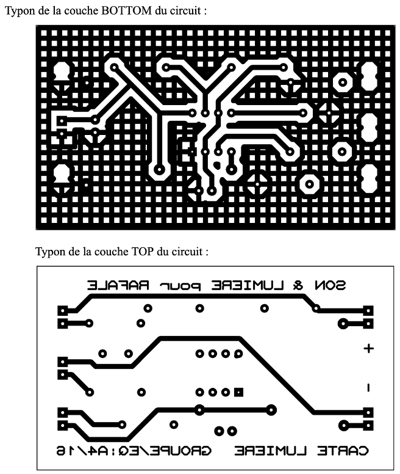
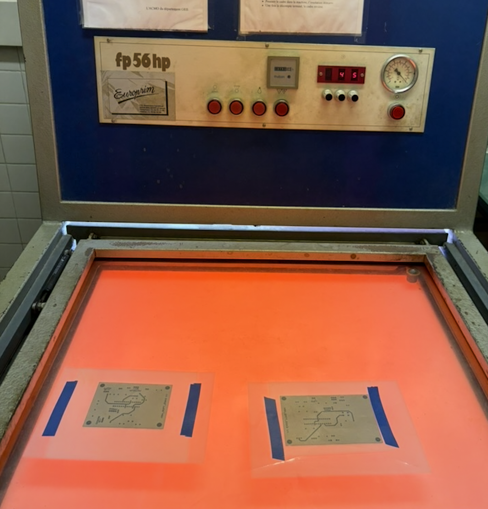
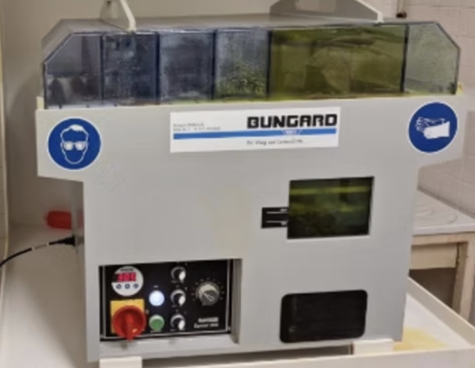
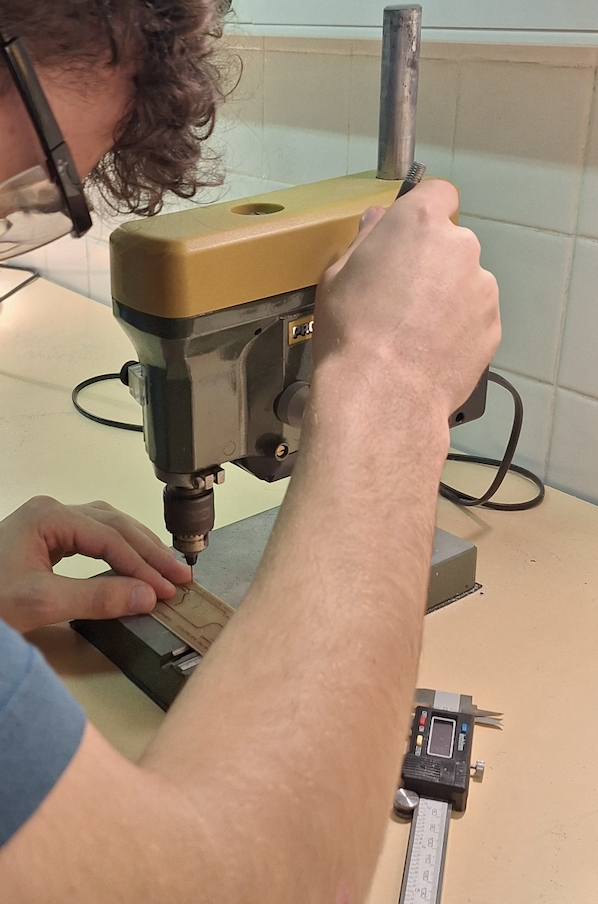
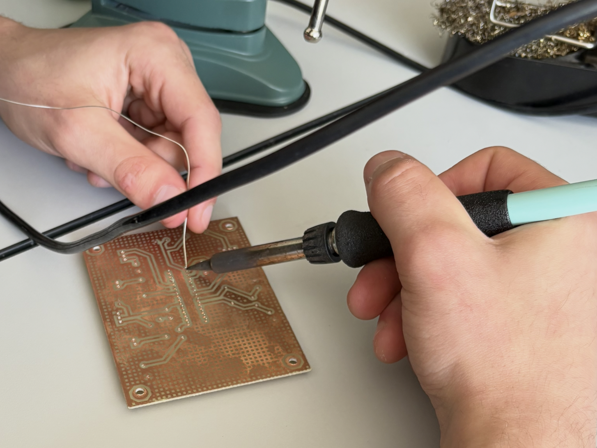

La phase de fabrication débute systématiquement par un travail de PAO rigoureux. Pour obtenir une opacité maximale et bloquer parfaitement les UV lors de l'insolation, nous superposons deux impressions distinctes sur transparents :
L'alignement des deux faces est minutieusement ajusté et solidarisé sur une plaque de verre avant l'introduction en machine.

La plaque de circuit imprimé, revêtue d'un film résine photosensible, est insérée sous les typons au cœur d'une insoleuse industrielle. La mise sous vide de la machine garantit un contact parfait et sans bulle d'air entre le calque et le cuivre.
L'exposition aux rayonnements ultraviolets permet de polymériser et de fixer le dessin de nos pistes directement sur la couche protectrice du circuit.

Le circuit est plongé dans une graveuse à jet de marque Bungard, paramétrée sur une vitesse d'avance de 30. Le bain d'acide attaque et dissout le cuivre brut qui n'a pas été protégé par l'insolation.
L'opération demande une surveillance constante et dure en moyenne 5 à 6 minutes. En cas de zones de cuivre persistent, un second balayage rapide (vitesse 80) est configuré pour affiner les pistes.

Afin de mettre le cuivre totalement à nu, la carte subit une insolation de nettoyage rapide sans aucun masque. Un dernier passage dans le bain de révélateur élimine définitivement les restes de film protecteur, laissant apparaître des pistes nettes.
Avant d'aller plus loin, une phase de contrôle électrique est menée à l'aide d'un multimètre configuré en mode testeur de continuité (bip) :
Cette phase mécanique s'effectue sur une perceuse à colonne d'atelier, en suivant rigoureusement les coordonnées du plan de perçage issu d'ARES (Drill Plot).

Le fer à souder est réglé à 380°C qui est la température de fusion de l'étain. L'intégration des composants suit une logique de hauteur stricte pour faciliter la manipulation : nous implantons d'abord les vias de continuité, puis les résistances, les supports d'enfilage de circuits intégrés, et enfin les condensateurs volumineux.
Règle de l'art : La panne du fer doit chauffer simultanément la pastille de cuivre et la broche du composant pendant 3 secondes. L'apport d'étain se fait en 2 secondes pour obtenir un joint lisse, brillant et formant un cône régulier à 45°.

La mise sous tension de la carte n'intervient qu'après une double validation. Nous realizons d'abord une inspection visuelle minutieuse (orientation des composants polarisés, conformité des valeurs de résistances), doublée d'un contrôle de l'absence de court-circuit sur les lignes d'alimentation principales.